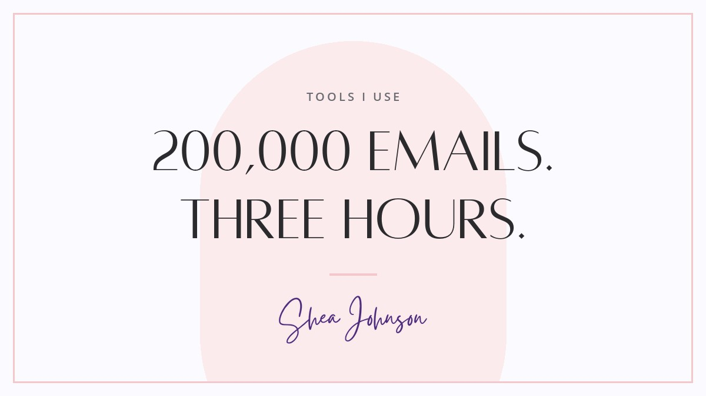
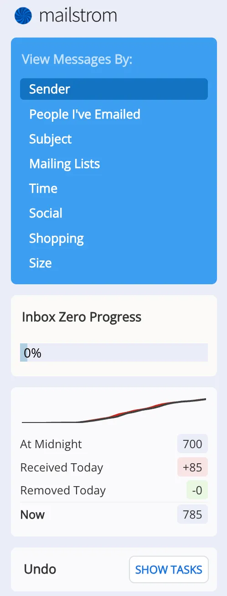
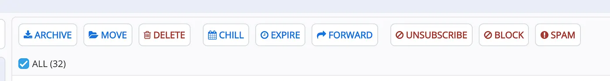
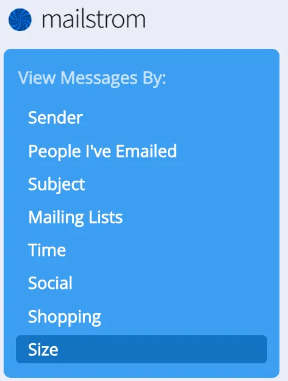
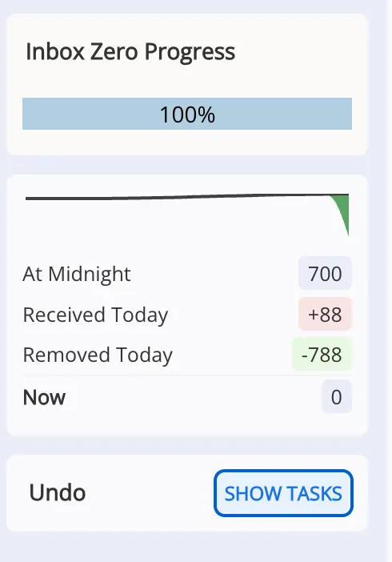
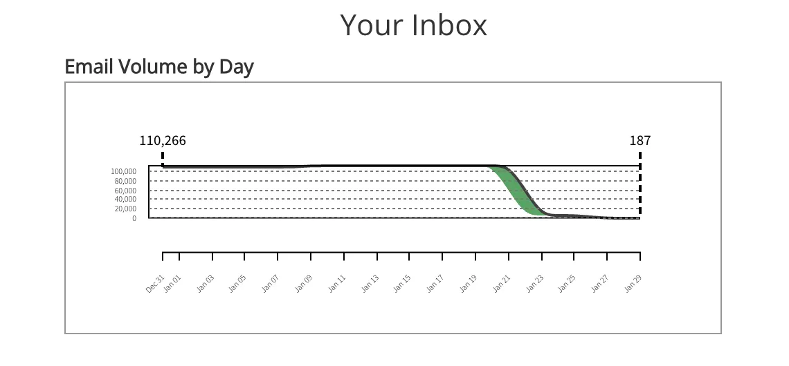
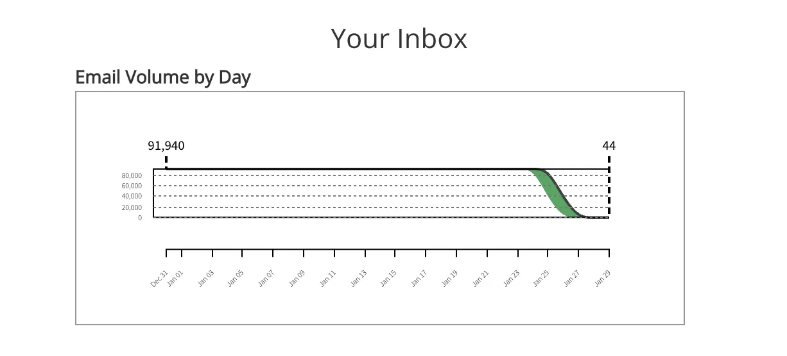

I remember being in one of my old apartments a long time ago.
I looked at my email inbox and it had reached 100,000 emails.
I said to myself, “Oh my goodness, I need to clean this up.”
So I headed over to Google, logged in, and started deleting.
After about 10 rounds of deleting 50 emails at a time — the maximum allowed — I realized…
This better not be the only way I can delete my emails.
Thank goodness I’ve always been this way when it comes to research.
I get online and start digging.
I tell myself, “There’s gotta be a solution out there. Someone else has had this problem before.”
And that’s when I stumbled across an email cleanup software called Mailstrom.co.
Now this was about five or six years ago.
I’ve known about it, talked about it, and shared it ever since.
I still haven’t made the YouTube tutorial I’ve been wanting to.
But this is me finally writing the blog post to share the resource.
A blog post is more realistic for me right now with everything life is throwing at me.
So here’s another amazing resource I love to share with my business owners.
It’s been a game changer in my own life.
It’s relieved the stress of staring at a crazy inbox and not knowing what to do — except maybe create a new email account.
And I’ve met people who’ve done exactly that.
Their inboxes got so full that instead of using a tool like Mailstrom, they just created a new email address.
That was their solution.
Hey — I’m all about doing what works for you.
But for me? That’s just crazy.
I would have to change my email address with every account I have a relationship with.
Call all the places — hospitals, banks, memberships, you name it.
You can imagine how much that would be in today’s digital age.
And I’d have to do that every time my inbox fills up?
Yeah… no.
So for those of you who want to keep your email address like me — and just never knew there was something out there to help you clean it up faster than 50 emails at a time…
Let me show you my strategy for using Mailstrom.
And how I cleaned up 200,000 emails in about three hours.
Now — I could just give you the link to the software.
But here’s the truth.
If you don’t know what I’m about to tell you, you’re gonna spend days cleaning up your email.
I’ve found a way to fast-track even the cleanup process once you’re inside the platform.
Here Are My Rules
First — sign up and take advantage of their free trial.
It’s amazing because it gives you plenty of time to do what I’m about to teach you.
Each plan increases the number of email inboxes you can clean up and includes features like unlimited removal and how many emails you can review, sort, and delete.
I’m always cleaning up multiple inboxes, so I go with the Plus plan.
You can add up to three email accounts.
But me? I cancel my subscription right after signup to avoid future charges.
Another important tip you might not want to forget.
I’ve only had to deep-clean my email inboxes twice in my life.
The first time — about 100,000 emails — took several days.
This time — about a month ago — I cleaned up DOUBLE in less than a fraction of the time.
Getting Started
Once you’ve signed in and picked your plan, you’ll see a screen that loads your emails.
After they’ve loaded, you’ll land on your dashboard.
On the left side, there’s a menu that lets you view messages by sender, subject, or mailing lists.

This is where the magic happens.
You’ll also see your Inbox Zero progress.
If you’ve never heard of “Inbox Zero” — it just means your inbox has reached zero emails.
It’s a thing, apparently.
A lot of us don’t know how to get there.
Hopefully this blog post can help.
Step 1: Start With Mailing Lists
Here’s what I do first.
I look at the emails from mailing lists.
As I click on a sender, I also have the option to click Unsubscribe.

Quick tip: If you select more than one sender at a time, the Unsubscribe button turns gray. You can only unsubscribe one at a time.
Sometimes we have thousands of emails from lists we never unsubscribed from.
Sometimes I delete the emails but keep the subscription because I still want those notifications.
Other times, the topic just doesn’t serve me anymore and I want to quiet the noise.
Here’s what to do:
Start by selecting senders you know you’re not unsubscribing from.
Delete those in bulk.
If you see a sender you don’t recognize, delete the bulk first, then go back and click on that sender to see who it is.
Once you know, you can decide whether to unsubscribe.
You’ll usually be redirected to a page where you can click Unsubscribe.
Then keep going — deleting senders in bulk that you’re keeping.
Step 2: Sort by Sender
Once I’ve handled the mailing list emails, I move over to Sender.
I start skimming for important names — people or businesses I don’t want to delete.
This part can feel tedious.
But what you’re really doing is scanning for names that matter.
When you find one, select that sender and click the “Move” button at the top of your dashboard.

You can create a new folder or add them to one that already exists.
I had tons of folders from my previous cleanup.
And when I log into Gmail, I can still see all the folders I created in Mailstrom.
So everything carries over.
Step 3: Check Emails You’ve Sent
After I’ve gone through and categorized all my important emails — with a fine-tooth comb —
I check the list of people I’ve emailed.
This helps shorten the list of emails I want to keep.
Most of the time, I want to keep those conversation threads.
You probably do too.
Step 4: The Golden Nugget
I’ve never really used the sorting options for Subject or Time.
But here’s what changed everything for me.
I noticed there were hundreds of emails where the sender only sent me one email.
That left thousands of one-off emails that could only be deleted 50 at a time.
Here’s the trick:
Scroll all the way down and click View Messages by Size.

Now you can delete the rest of your emails by size — and finally hit Inbox Zero.
Wrapping Up
Since I signed back up to write this blog post, it says I have 786 emails.
So I’m going to wrap this up, do some housekeeping, and hit Inbox Zero again.

I hope this helped.
And I hope it helps you hit Inbox Zero too.
So you don’t have to create a new email address every time your inbox fills up.
Until next time.


Clean inbox.
Clear mind.
You’ve got this.